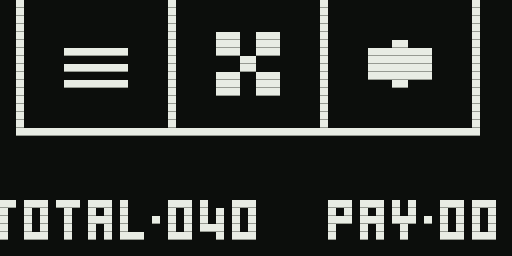
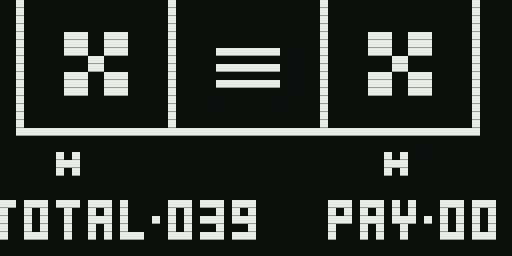
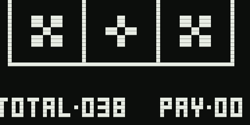

Poker Machine
Tony Horncastle · DREAMER no. 17 (1982-01) 1K RAMplayable, see notes



A three-reel poker machine where any three of a kind pays and you may hold reels if you won nothing last time. You start with 41 credits and each spin costs one. The left score is your credit and the right one the last win.
Keys
0 spin, 1/2/3 hold reel 1/2/3, C cancels holds.
Files
| File | Version | Load | Run |
|---|---|---|---|
| Poker Machine.d68 | main | 0080-03FF | C000 |
Listing as transcribed (with notes): poker_machine.txt
Source
DREAMER no. 17 on archive.org (PDF page 61). Author: Tony Horncastle.
Corrections applied
None.
Open doubts
- 0080-008F and 00D6-00FF not printed (zeros).
- At 0 credits 03AE = F100 returns to the monitor (not tested).
- The first automatic spin does not pay.
- After a win, reel 1 can stay held.